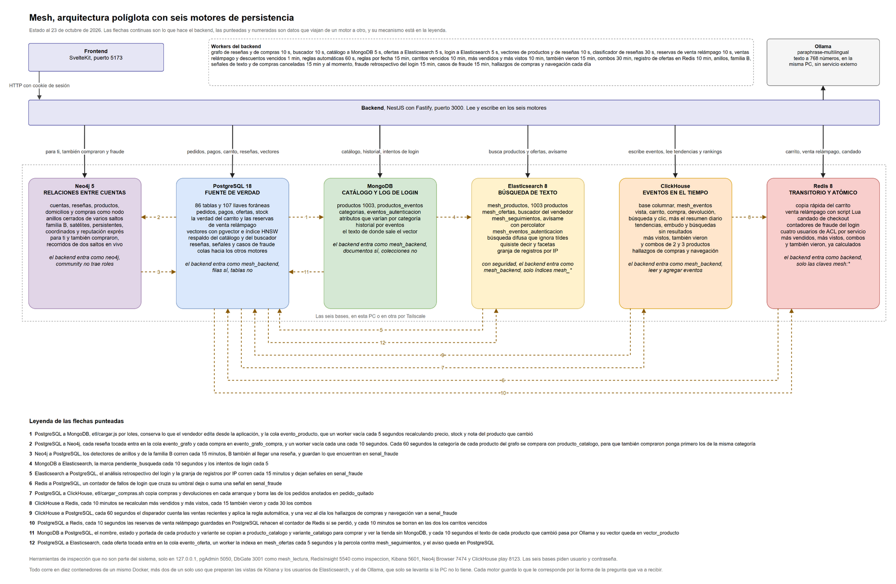
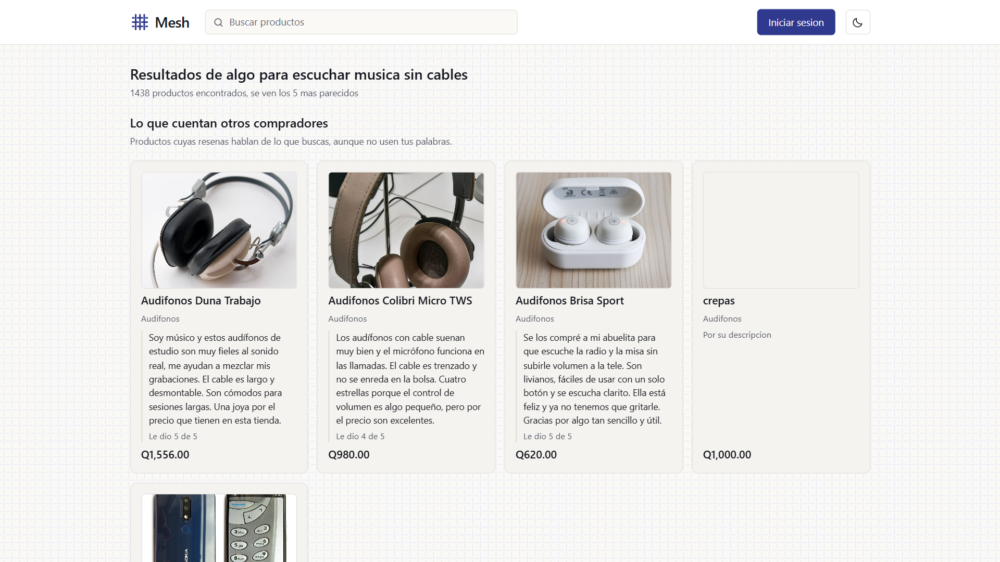
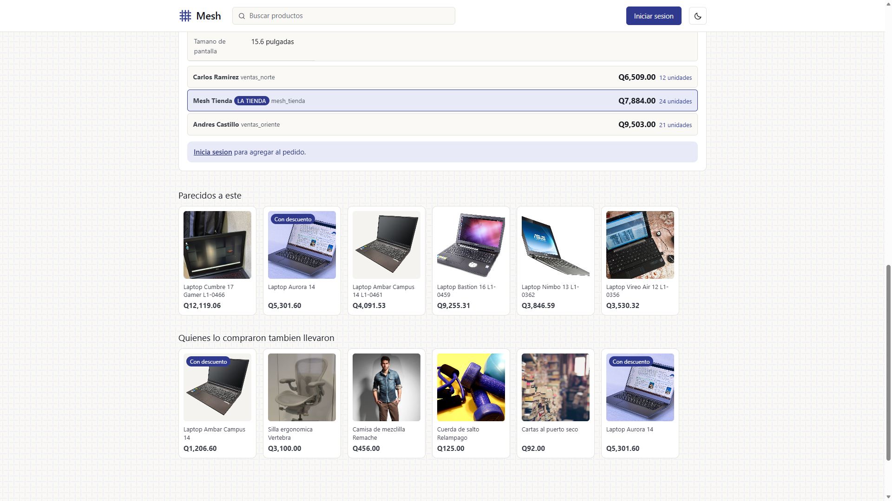
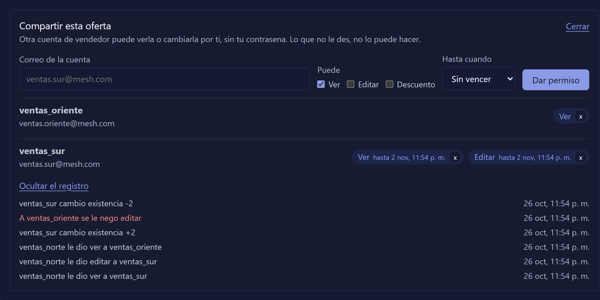
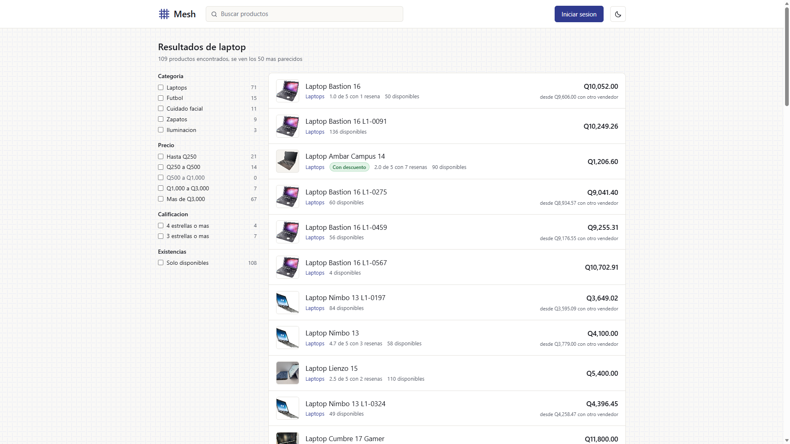
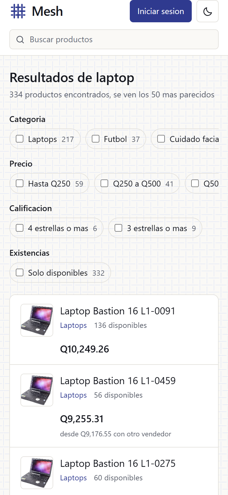

Bases de Datos 2 · Entrega final
TiendaYa con seis bases de datos, cada una por la pregunta que contesta
José Manuel González Corado · José David Navichoque Pineda · Juan Pablo Torres García
El equipo
José David
Navichoque
Backend
Las rutas, los workers y las colas, la recomendación y las dos mudanzas del vector, el carrito en PostgreSQL
José Manuel
González
Datos, frontend y arranque
Migraciones, ETL, el frontend, las pruebas, el control de acceso de cada base, los informes y el diagrama
Juan Pablo
Torres
ClickHouse y Neo4j
Los módulos de eventos, tendencias y combos en ClickHouse, y los de anillos y compras en Neo4j
El reto
Un producto describe una cosa del mundo y no es de nadie. Quién lo vende, a qué precio y con cuántas unidades es una oferta. Y cada parte de la tienda hace preguntas muy distintas.
La arquitectura
Dinero, stock, pedidos y el carrito en una transacción. Y los vectores con pgvector
Atributos distintos por categoría, la ficha entera en un documento y su historial
La copia rápida del carrito y la venta relámpago con un script Lua, sin sobreventas
Anillos de cuentas que se califican entre sí y quienes compraron esto también llevaron, primero los de su misma categoría
Vistas, búsquedas y compras, para tendencias y preguntas que no sabíamos que íbamos a hacer
Tolera errores de tecleo, facetas, la foto en el resultado y los avisos con percolator
La idea que lo explica todo
PostgreSQL es la verdad.
Lo demás se puede rehacer.
El dinero, el stock, los pedidos y el carrito solo se escriben ahí, en una transacción. Cada copia en otra base tiene de dónde reconstruirse, y si se cae una, la tienda sigue con las que quedan.
Diagrama final
continuas, lo que hace el backend · punteadas, datos entre bases

Recomendación semántica · 5 puntos
Nombre, categoría y descripción de cada producto, leídos de MongoDB
Lo vuelve 768 números con paraphrase-multilingual, en la misma PC y sin costo
Guarda el vector con un índice HNSW por coseno, junto a ofertas y pedidos
Los seis más cercanos, activos y sin copias, en el estante Parecidos a este
En la tienda

Algo para escuchar música sin cables. Ninguna palabra coincide con audífonos, y los encuentra por las reseñas de otros compradores.

La ficha de una laptop y sus seis parecidos, que salen de pgvector.
Una decisión que cambiamos dos veces
Ya venía en la imagen de PostgreSQL. Sin contenedor nuevo
El vector junto al texto para la búsqueda híbrida. Cómodo, pero sin medir
Medido, 1000 de 1001 contra 317. Y lo pidió el profesor
Una decisión cómoda también hay que medirla
Control de acceso · 4 puntos
| Base | El backend entra como | No puede | Para mirar |
|---|---|---|---|
| Redis | backend | tocar claves fuera de mesh, FLUSHALL, CONFIG, KEYS | inspeccion |
| MongoDB | mesh_backend | crear o borrar colecciones e índices, ver usuarios | mesh_lectura |
| Elasticsearch | mesh_backend | crear o borrar índices, administrar usuarios | mesh_lectura |
| ClickHouse | mesh_backend | borrar eventos, crear o borrar tablas | mesh_lectura |
| PostgreSQL | mesh_backend | crear, borrar o vaciar tablas, crear usuarios | mesh_lectura |
| Neo4j | neo4j | la edición community no trae roles | no existe |
Revisando la seguridad
Tenía la seguridad apagada con un comentario que decía solo escucha en la misma PC. No era cierto, el puerto se abría a la red para el modo remoto. Hoy pide usuario, y Kibana y el ETL entran con el suyo.
La ventana de MongoDB no pide login y entraba como root. Hoy entra como mesh_lectura y, como todas las herramientas, solo se abre desde la misma PC.
Le pedimos crear un rol y contestó Unsupported administration command. Los roles son de la edición de pago. Queda con contraseña y una sola puerta.
La prueba
93 OK 0 mal
bash seguridad/prueba_acceso.sh
Cada negativa tiene su control. Que mesh_lectura no pueda escribir solo cuenta si mesh_backend sí pudo. Lo que borraría algo se intenta en una transacción que se deshace, sobre algo que no existe, o se le pregunta antes a la base.
Control de acceso por persona

permiso_oferta en PostgreSQL y PermisoOfertaGuard en el backend, ADR-24
Un respaldo por base
| Se cae | Lo que daba sale de | Se compra |
|---|---|---|
| MongoDB | la copia del catálogo en PostgreSQL | sí |
| Redis | el carrito de PostgreSQL y los rankings de ClickHouse | sí |
| Elasticsearch | el buscador sobre la copia en PostgreSQL, con foto y filtros | sí |
| Neo4j | las recomendaciones salen de los pedidos | sí |
| ClickHouse | los rankings ya calculados en Redis | sí |
| PostgreSQL | avisa y no cobra nada a medias | no |
node pruebas/caidas.mjs, 51 comprobaciones con cada base apagada y otras 51 congelada
Lo que pidió el profesor


La foto viaja en el mismo documento que el nombre y el precio, guardada sin indexar. Una sola consulta pinta la tarjeta.
Registro único de decisiones
Catálogo en MongoDB
Dinero y stock en PostgreSQL
Imágenes en su variante
Quién propuso, en PostgreSQL
Reseñas en PostgreSQL
Carrito en Redis, revisada
Venta relámpago con Lua
Grafos contra columnar
Neo4j para anillos
ClickHouse para eventos
Elasticsearch para buscar
Pagos sin NewSQL
Vectores en pgvector
Un usuario por servicio
Login en MongoDB
Vencimientos en PostgreSQL
Un modelo de señales
Comprar sin MongoDB
Compras en el grafo
Avisos con percolator
El carrito, verdad en PostgreSQL
Un respaldo por base
La foto en el buscador
Un ACL por oferta en la aplicación
La categoría en el grafo
Las que tienen fondo verde se habían hecho sin su registro y ahora lo tienen, con el flujo que tocan y qué pasa si cada base se cae. La 24 y la 25 son de la última semana y nacieron con el suyo.
Retrospectiva · 4 puntos
Lo que aprendimos
Cada dato con un solo dueño escrito.
En casi todo lo que replantearíamos, una copia terminó portándose como la verdad. La regla es que todo lo que no es el dueño se pueda borrar y volver a calcular sin perder nada.
DEMO
Gracias
¿Preguntas?
github.com/pinedahuella/Proyecto-Tienda-Base-Datos-2